What can this app do?
Always know the distance to the Green Center. You can also tap anywhere on the map to measure the distance to a specific point (3-point measurement).
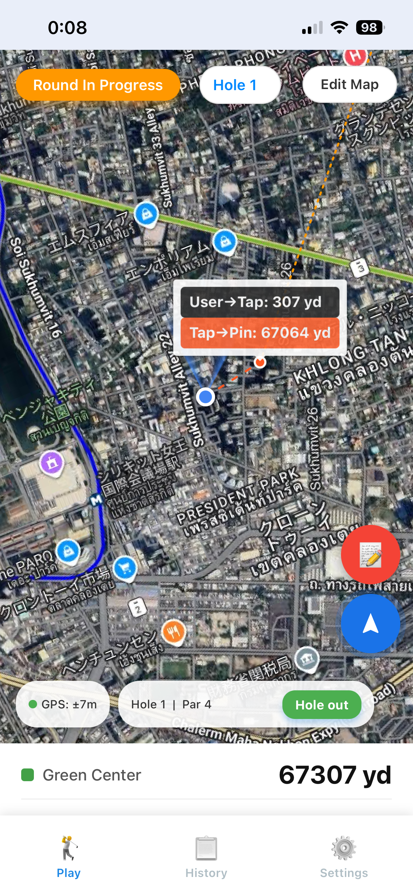
Distance to Green & Point Tapping
Record every shot with the club used. Easy-to-tap buttons for Penalties, OB, and Playing 4 ensure accurate recording even during a busy round.
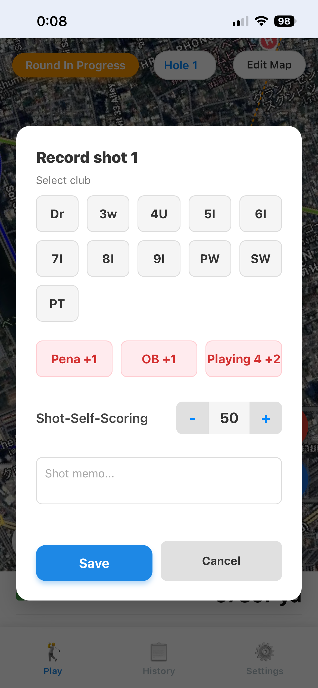
Advanced Shot Entry
The app automatically calculates your score, putts, and penalties for each hole and the entire round. View your progress instantly on the Scorecard.
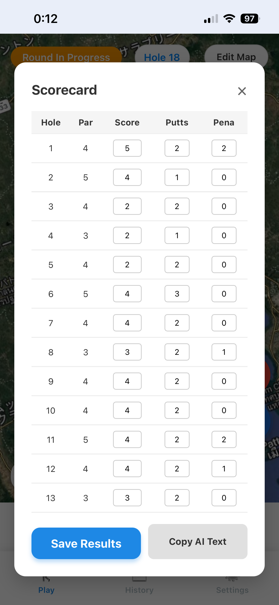
Real-time Scorecard
Add to Home Screen (iOS)
Access the app URL using the Safari browser on your iPhone. Tap the Share button at the bottom center.

1. Safari Browser View
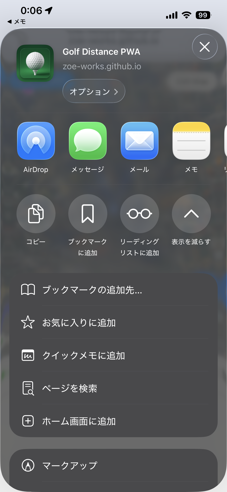
2. Tap the Share Icon
Scroll down in the share menu and select "Add to Home Screen". Review the name and tap Add.
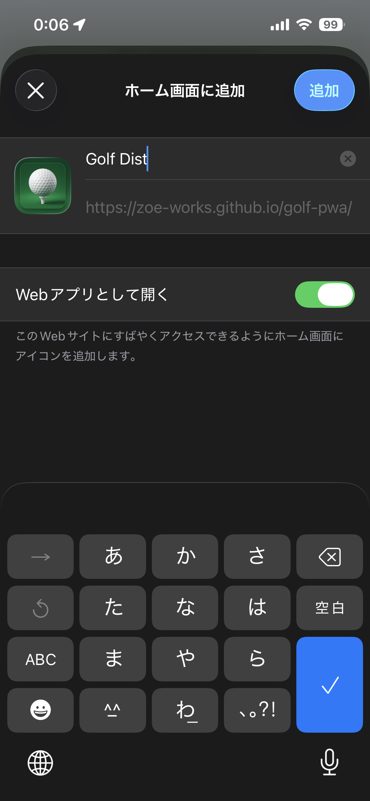
3. Confirm Installation

4. Icon on Home Screen
Club Configuration
Go to the Settings tab and select CLUB SETTINGS. Check the clubs you currently carry to customize the recording interface.
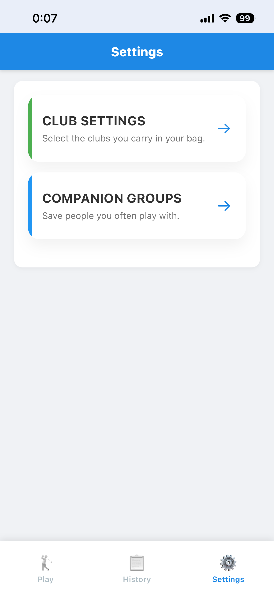
Settings Menu
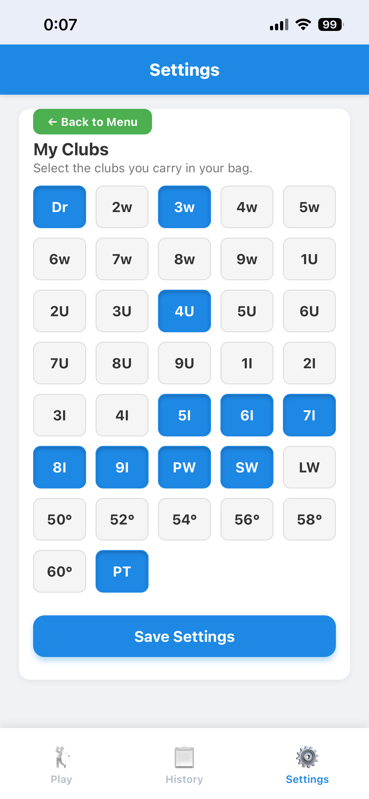
Select Your Clubs
Recording Your Round
Tap "Start Round" on the Play screen. Select your golf course and starting hole.
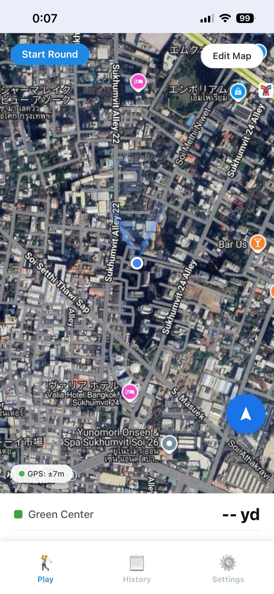
Initial Play Screen
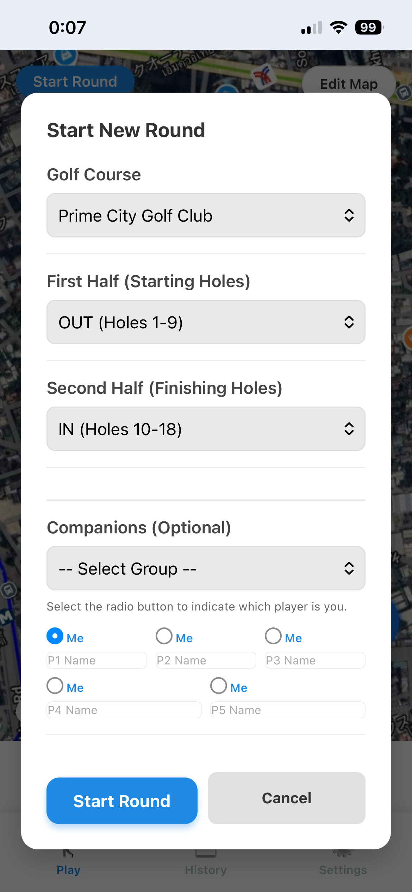
Setup Your Round
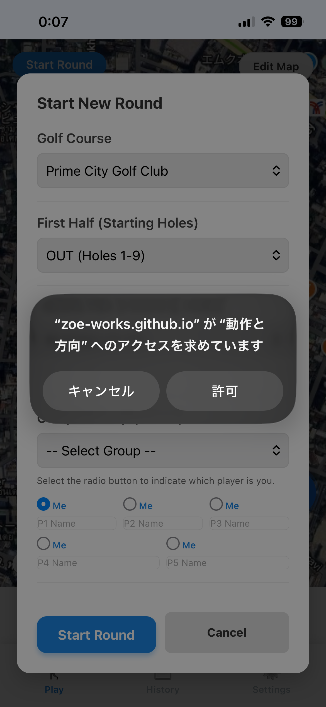
Allow Sensors (Required for GPS/Compass)
Tap the Red Pencil Button to record a shot. Once you finish a hole, tap Hole Out.
Active Map with Distance Markers
Select Club & Penalties
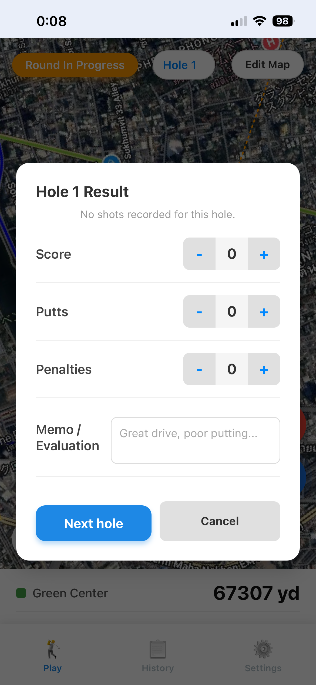
Enter Putts & Score
Upon finishing the final hole, the Scorecard will be displayed. Save the results to view them anytime in the History tab.
Full Round Summary
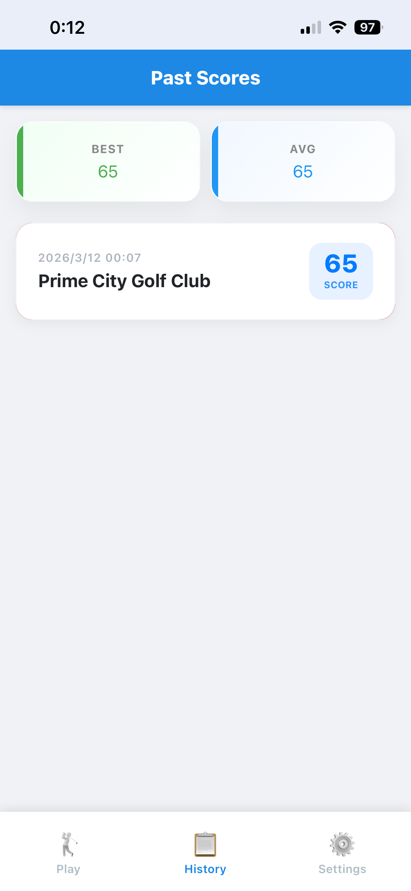
Saved in History